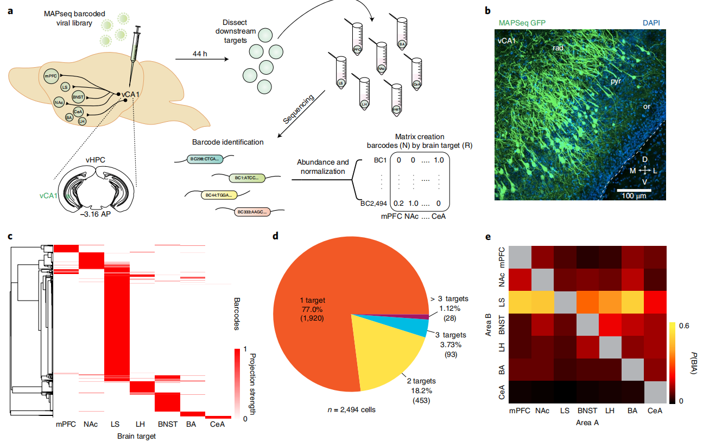
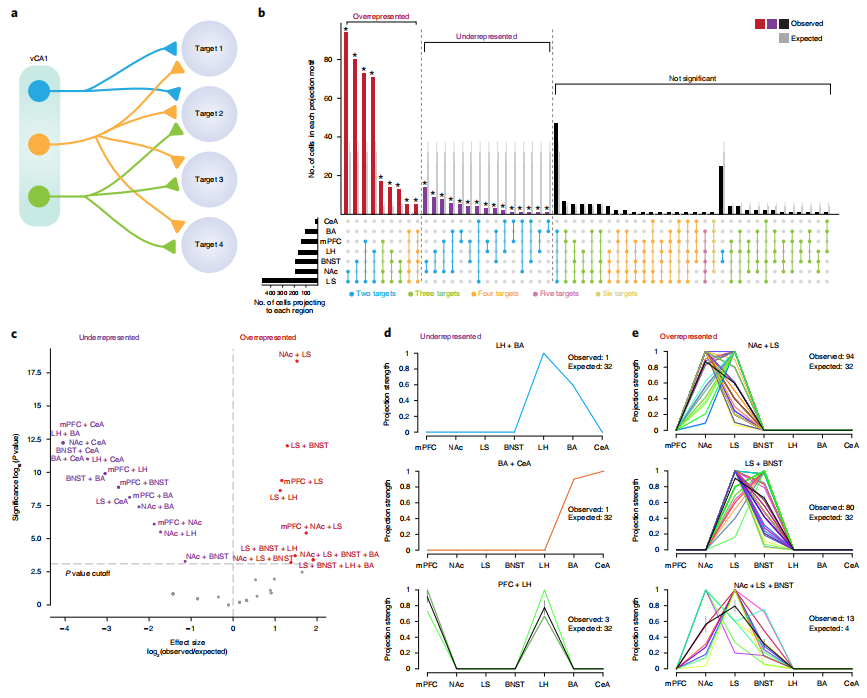
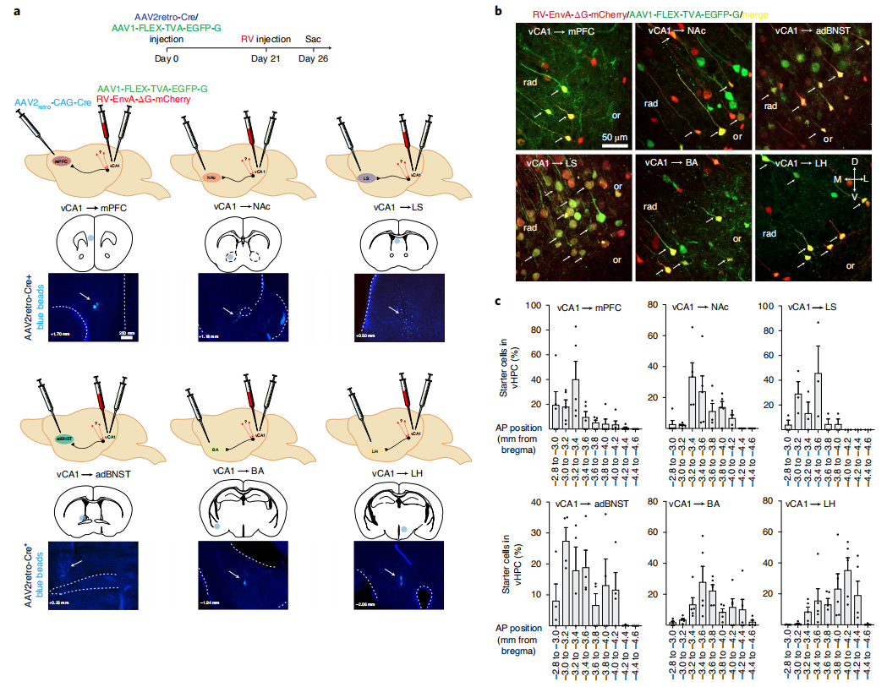
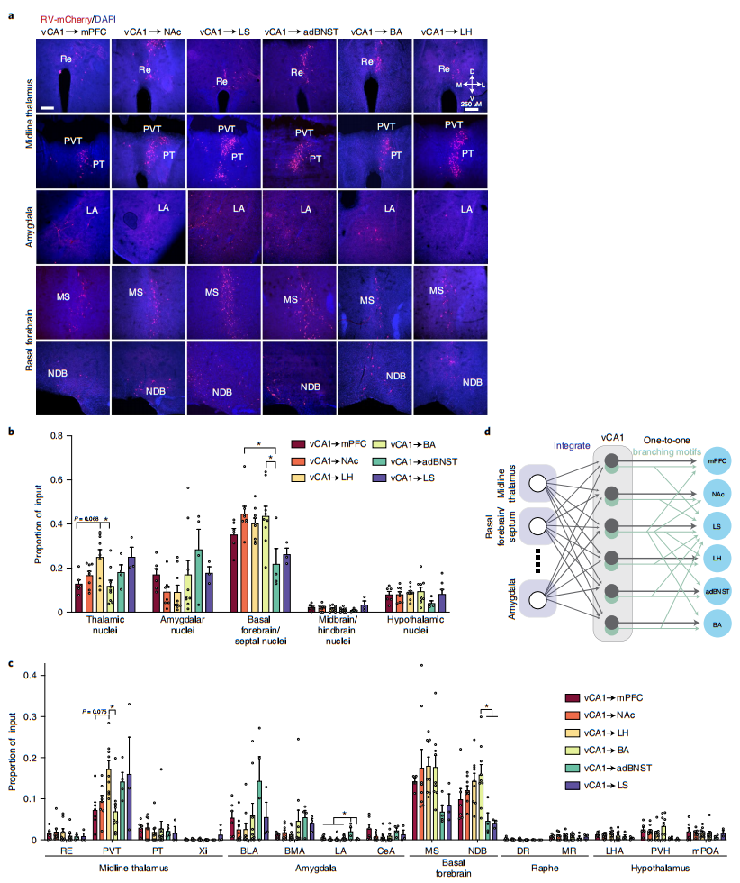
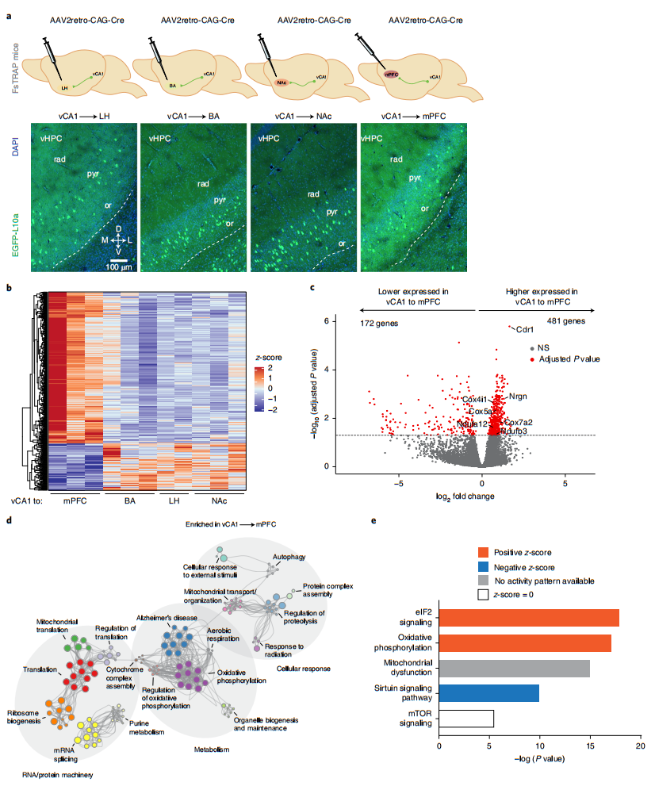

文献阅读 --- Circuit and molecular architecture of a ventral hippocampal network
文献信息
题目: 腹侧海马网络的环路和分子结构
DOI: https://doi.org/10.1038/s41593-020-0705-8
Cite: Gergues MM, Han KJ, Choi HS, et al. Circuit and molecular architecture of a ventral hippocampal network. Nat Neurosci 23, 1444–1452 (2020).
Abstract：
腹侧海马体(ventral hippocampus, vHPC)是处理情绪信息的网络中的一个关键枢纽。虽然最近的研究表明，腹侧CA1(vCA1)投射神经元在功能上是可分离的，但 vCA1 的输入和输出是如何组织的基本原理仍不清楚。在这里，我们使用病毒和测序方法来定义扩展的 vCA1 环路的逻辑。利用基因条形码神经元高通量测序(MAPseq)来绘制数千个 vCA1 神经元的轴突投射，我们确定了一群神经元，这些神经元同时广播信息到多个已知的调节应激轴和接近-回避行为的区域。通过对 vCA1 投射神经元的分子谱和病毒输入输出追踪，我们展示了具有不同投射靶标的神经元在输入和转录特征上存在差异。这些研究揭示了 vCA1 的新的组织原则，这可能是其功能异质性的基础。
Results：
Fig1. 使用MAPseq进行 vCA1 projections 的高通量映射

a. MAPseq技术的实验流程，首先需要构建一个很大的病毒库，大约 2x107 个病毒，每个病毒都带有不同的 barcode。他们采用的病毒是 Sindbis Virus，这是一种顺行标记病毒。之后将稀释的病毒注射到腹侧海马体的 vCA1 脑区，保证每个神经元只含有一个病毒。44小时后分别解剖 vCA1 下游 7 个已知的目标区域(mPFC、LS、BNST、NAc、CeA、BA、LH )进行 Bulk RNA-seq 测序。测序序列与 Barcode 序列进行比对，获得 Barcodes 与 brain target 的表达矩阵，每一种 Barcode 代表一个 vCA1 神经元细胞。他们最终检测到了 2494 个 barcode 细胞，获得了这样一个 2494×7 的表达矩阵。
b. vCA1 注射部位 MAPseq 绿色荧光蛋白(GFP)的表达。
c. 获得的 2494 个 vCA1 神经元与 7 个 target 矩阵的热图展示，通过这个图可以看到 vCA1 神经元整体的一个投射情况，大部分都投射到 LS 脑区。
d. 统计了 vCA1 神经元投射 target 的个数情况，77% 都是单靶的，18.2% 投射到两个 targets，3.73% 投射到三个，1.12% 投射到三个以上。
e. 统计了投射到 A 脑区的条件下同时投射到 B 脑区的条件概率热图，可以看到 LS 这一行概率最高，说明投射到 LS 的多靶细胞较多。
Fig2. vCA1 投射模式

a. 一个示意图，蓝色代表 vCA1 投射到两个 targets，绿色代表三个，橙色代表四个。
b. vCA1 多靶神经元投射模式的 UpSet 图展示，这个图可以分成 3 个部分来看：左下方的条形图是投射到 7 个 target 的细胞数目，可以看到投射到 LS 的细胞最多，投射到 CeA 的很少。点线图代表了不同的投射模式，比如，第一列代表投射到 NAc 和 LS 的投射模式，第二列代表投射到 BNST 和 LS 的投射模式
右上方的条形图是对应投射模式的细胞数目。红色紫色黑色的柱子是实际的观察值，灰色的柱子是 null model 下的期望值。null model 是假设 vCA1 投射到 7 个 target 没有偏好性，通过二项分布概率算出来的细胞数目。他们将观察值和期望值进行了差异分析，红色表示相对于期望值显著上调的投射模式，紫色表示相对于期望值显著下调的投射模式，黑色表示没有显著差异。
c. 不同投射模式观测值与期望值差异分析的火山图展示，这张图说明 vCA1 神经元更倾向于右边红色的这些投射模式，不倾向于左边紫色的这些投射模式。
de. 每一种投射模式的投射强度展示，x 轴代表下游的 7 个 target 区域，y 轴代表对应 target 的投射强度，不同颜色的线条代表不同的细胞。这个图是想说明 vCA1 神经元的投射是有差异的，即使是具有相同投射模式的神经元，它们的投射强度也各不相同。
Fig3. Viral input–output tracing of vCA1

a. 在已知了 vCA1 下游的投射模式后，他们又对 vCA1 上游的投射模式进行了追踪。因为 CeA 的投射很少，所以没有研究，只研究了这 6 种。这张图是他们追踪 vCA1 上游投射模式的实验原理。以第一个 mPFC 为例，首先在下游脑区 mPFC 注射 AAV2retro-CAG-Cre 病毒，在 vCA1 注射 AAV1-FLEX-TVA-EGFP-G 病毒。只有与下游 mPFC 脑区间存在投射的 vCA1 神经元中才有 Cre 重组酶的表达，Cre 作用于 FLEX，表达 TVA-EGFP-G。21 天后在 CA1 注射 RV-EnvA-ΔG-mCherry 病毒，ΔG(G蛋白缺失)病毒没有感染能力，TVA 是 EnvA 的受体，RV-EnvA-ΔG-mCherry 只能进入表达 TVA-EGFP-G 的 vCA1 神经元中，逆行感染 vCA1 上游神经元。不投射到下游脑区的 vCA1 神经元中没有 Cre，不表达 TVA-EGFP-G，无法标记上游神经元。这样就获得了 上游 → vCA1 → 下游，3层神经网络。
b. 6 种投射模式 vCA1 注射位点 RV-EnvA-ΔG-mCherry 和 AAV1-FLEX-TVA-EGFP-G 共表达情况。
c. 6 种投射模式沿 vHPC 的 AP 轴不同位置的神经元数目。
Fig4. RV-labeled inputs to vCA1 output neurons

a. RV-mCherry 标记的上游投射模式的情况.
b. 具体的统计，横轴的 5 个大组就代表检测的 5 个上游核团，每一组里面 6 个不同的颜色代表 6 个不同的下游投射模式。纵轴代表输入细胞的数目。从这个结果来看，同一个上游核团中不同颜色的柱状图差别不是很大，说明 vCA1 的 6 种下游输出模式对应的上游输入模式没有特别明显的差异。但是不同的上游核团之间柱状图有明显差别，说明 vCA1 接收不同上游输入的比率有差异，比如接收基底前脑的输入多，接收中缝核的输入少。
c. 同b，不同上游核团中亚核团细胞数目统计。
d. 根据前面上游和下游投射的这些结果绘制的 vCA1 的三层神经网络，线条的粗细代表了投射的强度。
Fig5. Transcriptional profiling of vCA1 neurons defined by connectivity.

a. 为了研究了 vCA1 不同投射模式转录组差异，按照之前同样的方法注射病毒，之后筛选表达 EGFP 的神经元进行 bulk RNAseq 测序。
b. 差异基因分析，可以看到 vCA1 投射到 mPFC 与投射到 BA、LH、NAc 之间的转录组存在差异。
c. vCA1 投射到 mPFC 差异基因火山图。
de. GO 分析的结果，vCA1 投射到 mPFC 高表达的基因主要是一些代谢、氧化磷酸化相关的基因。